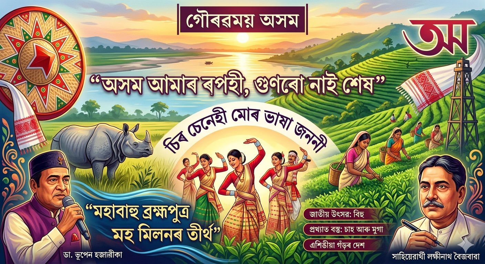
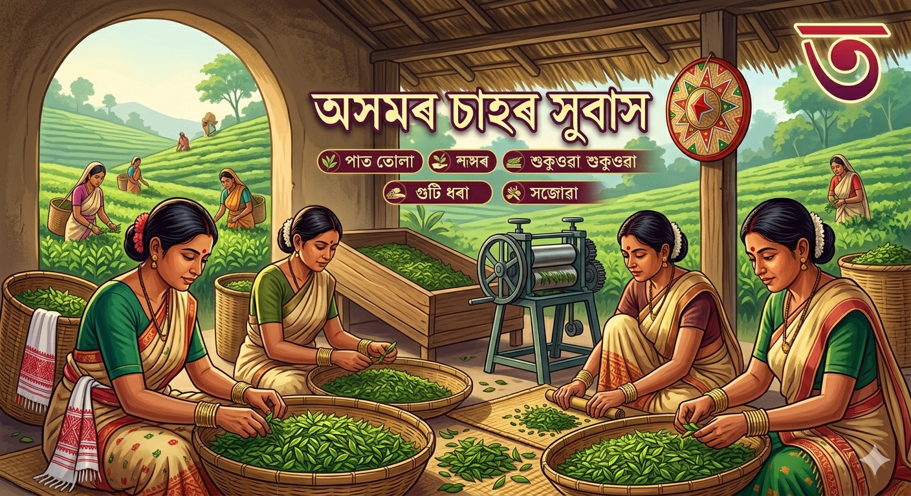

"অসম আমাৰ ৰূপহী,গুণৰো নাই শেষ,
ভাৰতৰে পূৰ্বদেশৰ সূৰ্য্য উঠা দেশ।"
"চিৰ চেনেহী মোৰ ভাষা জননী।".
"মই অসমীয়া বুলি পৰিচয়
দিবলৈ গৌৰৱ অনুভৱ কৰোঁ।"

অপ্ৰতিৰোধ্য অসম: ভাৰতৰ আন বহু ঠাই মোগলৰ শাসনাধীন হোৱাৰ বিপৰীতে অসমক মোগলে সম্পূৰ্ণৰূপে জয় কৰিব পৰা নাছিল। অসমীয়া সৈন্যই ১৭ বাৰকৈ মোগলৰ আক্ৰমণ ব্যৰ্থ কৰিছিল। ইয়াৰ ভিতৰত ১৬৭১ চনৰ শৰাইঘাটৰ যুদ্ধ বিশ্বৰ ইতিহাসত অন্যতম শ্ৰেষ্ঠ নৌ-যুদ্ধ হিচাপে পৰিগণিত হয়।
অনন্য শিল্পকলা: অসমৰ মুগা শিল্প আৰু কাঁহ-পিতলৰ শিল্প (হাজো আৰু সৰ্থেবাৰীৰ) কেৱল আমাৰ পৰম্পৰাই নহয়, ই আমাৰ অৰ্থনীতিৰো এক সবল ভেটি। মুগা ৰেচমক 'অসমৰ সোণালী সুতা' বুলি কোৱা হয় কাৰণ ই বিশ্বৰ ভিতৰত কেৱল এই অঞ্চলতে পোৱা যায়।

ঐতিহাসিক সমন্বয়: স্বৰ্গদেউ চুকাফাই সাতৰাজ মাৰি একৰাজ কৰি 'বৰ অসম'ৰ ভেটি গঢ়িছিল। আহোম শাসনকালত বিভিন্ন জনগোষ্ঠীৰ লোকক একগোট কৰি এটা বৃহৎ 'অসমীয়া' পৰিচয় গঢ়ি তোলা হৈছিল।
আধ্যাত্মিক ঐক্য: মহাপুৰুষ শ্ৰীমন্ত শংকৰদেৱৰ নৱ-বৈষ্ণৱ ধৰ্মই জাতি-ভেদৰ প্ৰাচীৰ ভাঙি সকলোকে "এক চৰণ, এক দেৱ"ৰ মজিয়ালৈ আনিছিল। ঠিক তেনেদৰে, আজান ফকীৰে জিকিৰ আৰু জাৰীৰ জৰিয়তে হিন্দু-মুছলমানৰ মাজত ভাতৃত্ববোধৰ এনাজৰী ডাল দৃঢ় কৰিছিল।
সাংস্কৃতিক সংমিশ্ৰণ: অসমৰ লোক-সংস্কৃতি হ’ল মংগোলীয়, অষ্ট্ৰিক আৰু আৰ্য সংস্কৃতিৰ এক সুন্দৰ সংমিশ্ৰণ। আমাৰ বিহু, ওজাপালি বা বিভিন্ন জনগোষ্ঠীয় নৃত্য-গীতবোৰ এই মিলনৰে একো একোটা নিদৰ্শন।
সাহিত্যিক প্ৰেৰণা: ৰূপকোঁৱৰ জ্যোতিপ্ৰসাদ আগৰৱালাই কৈছিল— "অসমীয়া ডেকাই বিশ্ব বিজয় কৰিব লাগিব।" তেওঁ আৰু সুধাকণ্ঠ ড° ভূপেন হাজৰিকাই তেওঁলোকৰ গীতৰ জৰিয়তে এই "মহা মিলনৰ" বাৰ্তা যুগে যুগে বিলাই গৈছে।